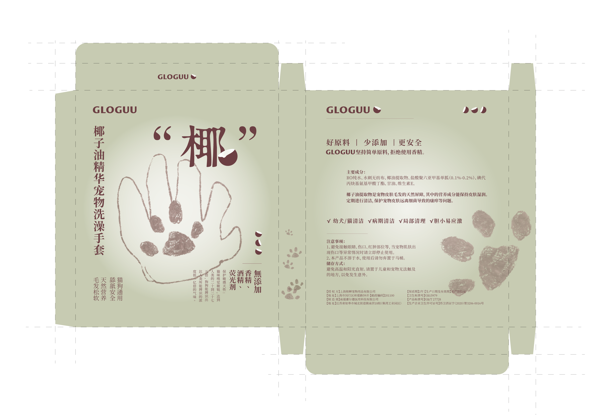
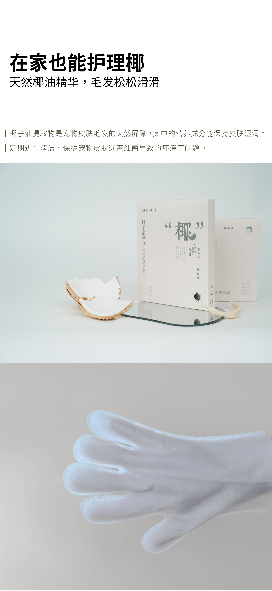

Commercial product packaging design commission for the brand GLOGUU
July 2021
This is a disposable pet bathing glove. The brand’s selling point is that it contains no added fragrance, alcohol or fluorescent agents, so I chose a soothing green color and simple hand-drawn lines.
Design


Actual product


